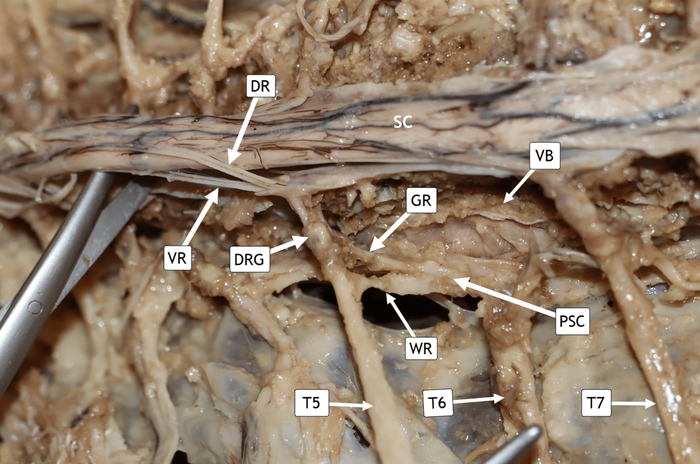
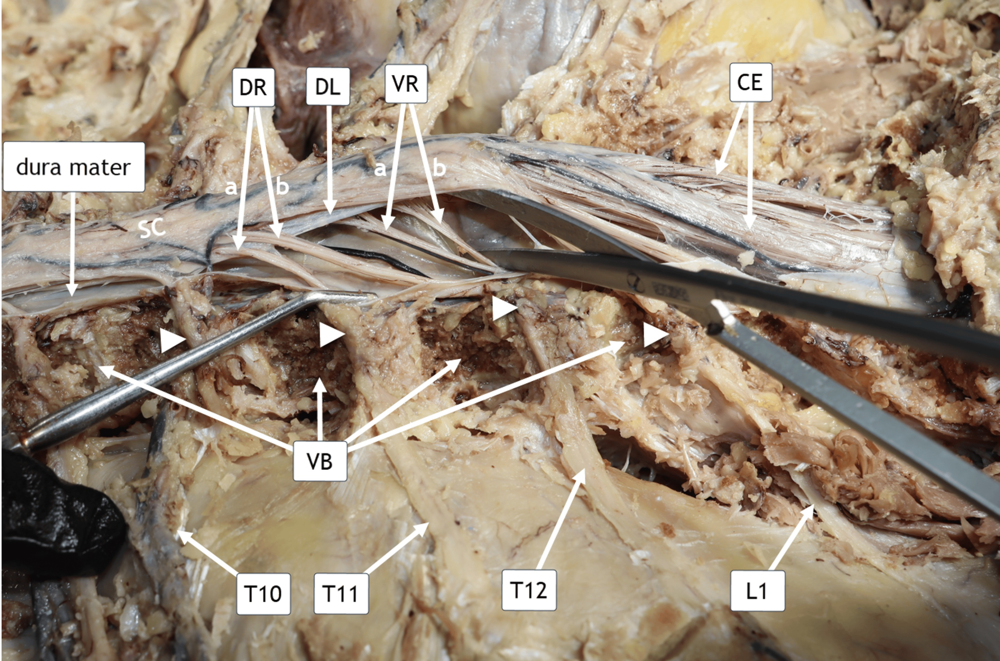

Chapter 22 · human dissection, source annotations retained
Trace roots beside the cord
These photographs come from one 75-year-old male embalmed, formalin-fixed donor. The paper reports scoliosis in this donor. Posterior structures and ribs were removed and the dura was opened. The head is out of frame toward image-left in both source views. Prepared tissue colour is not living colour, and no metric bar is supplied.
White arrows and arrowheads identify structures in the source. They do not record the direction, speed or timing of neural signals.
1 · Rootlets, ganglion and sympathetic chain


DR / VR dorsal / ventral root fibres.
DRG dorsal root ganglion; SC spinal cord.
PSC paravertebral sympathetic chain.
GR / WR grey / white rami communicantes.
VB vertebral body; surrounding bone has been reduced.
The terms grey/white rami do not label cord grey/white matter or measure myelination from photograph colour.
Enochs et al. (2026), Cureus 18:e102671, Figure 7. © 2026 authors, CC BY 4.0. Complete 2892 × 1919 original JPEG stream, unchanged; no crop, enhancement, recolouring, new leader or scale. Planned print width 170 mm, approximately 432 ppi.
2 · Compare roots around the denticulate ligament


| Source mark | Caption assignment |
|---|---|
| DR(a) | T11 dorsal rootlets |
| DR(b) | T12 dorsal rootlets |
| VR(a) | T12 ventral rootlets |
| VR(b) | L1 ventral rootlets |
The same letter does not identify a paired dorsal and ventral root. In this key, the T12 entries are DR(b) and VR(a).
These are posterior dissection views, not measured cord-segment-to-vertebral alignment maps. No new physical lengths, conduction velocities, live sensory/motor activity or cell counts are inferred.
Enochs, Li, Fan, Richmond, Paton and Prada III, Novel Full-Length Dissection of the Sympathetic Chain and Spinal Cord From T1-L1 in a Human Cadaver (30 January 2026), Figure 8. © 2026 authors, CC BY 4.0. Complete 2892 × 1914 original JPEG stream, unchanged. Source PDF, exact hashes, extraction and limitations.